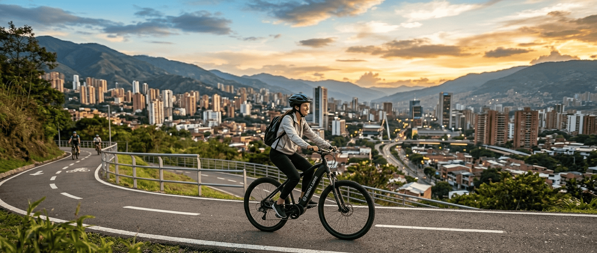

Alquiler de bicicletas
Ofrecemos una amplia gama de bicicletas para satisfacer tus necesidades, desde modelos urbanos para desplazarte por la ciudad hasta bicicletas de montaña para los aventureros que buscan explorar senderos y rutas naturales.

Bienvenido a Rueda Libre, tu mejor aliado para recorrer y descubrir Medellín sobre dos ruedas. Nos apasiona promover la movilidad sostenible, la aventura urbana y el turismo activo. Ya sea que busques una bicicleta para moverte por la ciudad, explorar sus parques y ciclorrutas, o unirte a un recorrido guiado, aquí encontrarás equipos de excelente calidad y la mejor atención para que tu experiencia sea inolvidable. ¡Súbete a la bici y siente la libertad de rodar con nosotros! Contáctanos en el pie de página.
Reservar ahoraConoce las opciones disponibles para explorar la ciudad a tu ritmo.
Ofrecemos una amplia gama de bicicletas para satisfacer tus necesidades, desde modelos urbanos para desplazarte por la ciudad hasta bicicletas de montaña para los aventureros que buscan explorar senderos y rutas naturales.

Únete a nuestras rutas guiadas y descubre Medellín de una manera única. Nuestros guías expertos te llevarán por los lugares más emblemáticos, compartiendo historias y secretos de la ciudad mientras pedaleas.
Somos un equipo apasionado por la movilidad sostenible y el turismo activo. Nuestra misión es facilitar el acceso a la bicicleta como medio de transporte y recreación en Medellín, promoviendo así un estilo de vida más saludable y ecológico.